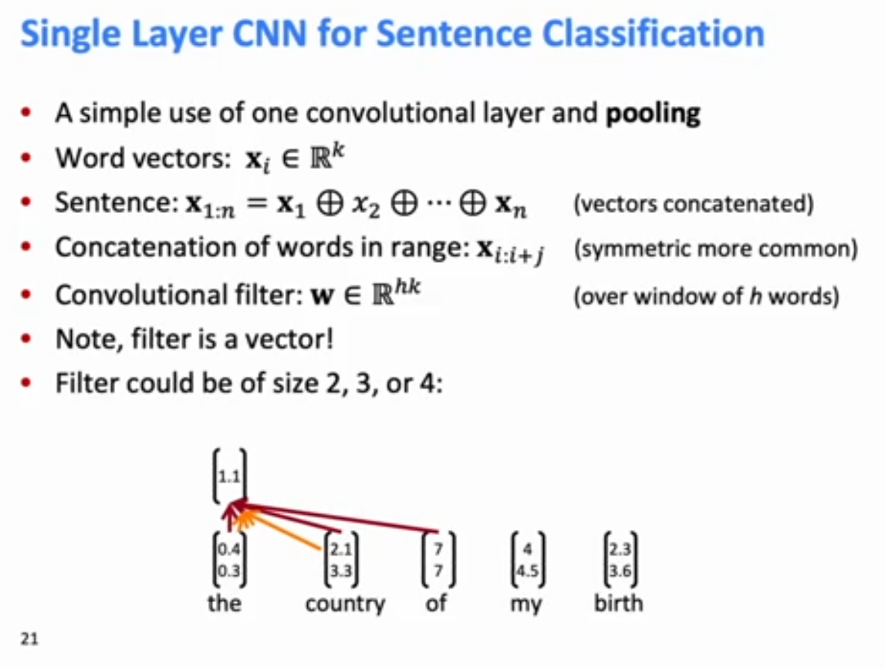
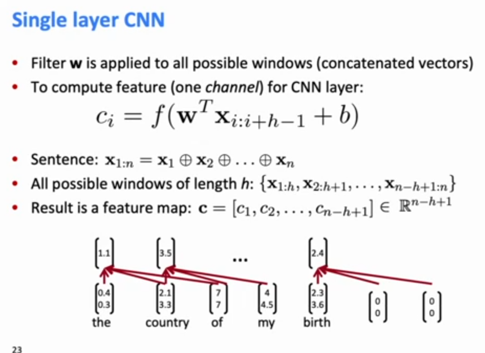
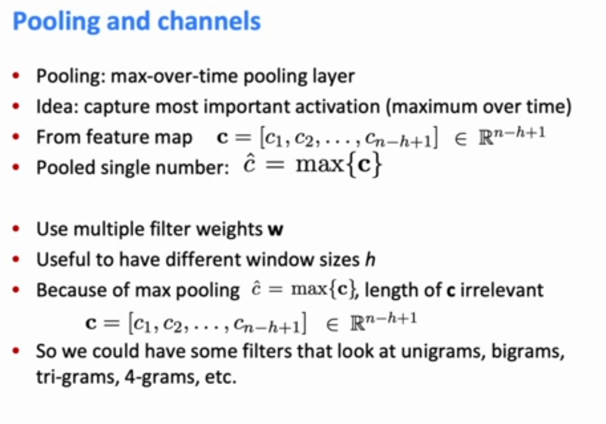

- This allows deep NNs to learn much more reliably, becasue a lot of hyperparameter tuning in deep NN training is being very fussy about hyperparaneters to keep a scale of things about right so they dont get too big or too small. Batch-norm takes away the need to be so fussy about it.
Convolutional Neural Networks for Sentence Classification (2014, very early paper)
Single Sentence Text Classification (Old)
Below, f is a nonlinearity. In this paper they use a bias term and right-padding only (most people do symmetric padding).

At the end, do maxpooling. They have multiple features of different kernel sizes to do the analysis

He used two identical copies of word vectors (GloVE) concatenated together to represent words. One set was frozen while the other was fine-tuned during training. Elemnts from both copies went in together in the max-pool.
To obtain final feature vector
Finally, the classification was done through a simple softmax layer.
Finally, they used dropout: Create masking vector
At test time, no dropout, but becuase before you were dropping out a lot of stuff, scale weight matric by dropout prob
Also: Constrain
Very Deep CNNs for Text Classification (VD-CNN)
(Conneau, Schwenl, LeCun, EACL2017).
Starting Point: Build a computer vision-like CNN stack for NLP. This is significant because previous CNNs for NLP has not been very deep.
The authors started from the character level onwards. They truncate or pad documents to 1024 documents.
- For each character, learn a character embedding of dim 16 (dim is not 16x1024)
- Stick that through a convolutional layer with a kernel size of 3 and 64 output channel (dim is now 64x2014)
- For n in 64,128,256,512:
- Stick that through a convolutional block of size (3,n) x2
- Do local pool to halve the size of the size of the sentence but doubple the size of the channels (features). Ourput is size n x 1024/(n/64). Don't do on last loop.
- Do k-max pooling, keep 8 strongest values in each channel. (Dim=512 x 8)
- Put it through 3 fully connected layers (512x8xnum_classes)
Each Convolutional block is two convolutional layers of kernel 3, each collowed by batch norm and a ReLU nonlinearity. Pad to preserve dimension. Each convolutional block also has a skip connection that goes directly from the start of the block to the end.

They used huge datasets to test their model
Deeper networks work better up to 29 layers, after that point, it didn't much better with depth.
In vision, people generally use ResNet50 or ReNet101 for good results. They only use ResNet34 for a very lightweigh model. But in language it seems that the model stops improving after depth ~30.
Quasi-Recurrent Neural Networks (Q-RNN, which are actually CNNs)
RNNs are a standard building blocks for NLP, but they paralleize badly and slowly. Idea: Take the best and paralleizable parts of RNNs and CNNs.
Rather than doing the standard LSTM things which is calculate the update value and gates for your new time slice, we instaed stick a relation between
So we still compute candidate, forget, and ourput gates, but these candidates and gated values are done inside a pooling layer via a convolutional operation. So element-wise gaten pseudo-recurrence ofr parallelism across channels is done in pooling layer:
In the pseudo-recurrence, you are modeling an interaction between words and the words next to it at each time slice, but its just worked out locally rather than being carried forward in one layer. But if you made your networks deeper using Q-RNNs, you expand your window of inference and you get a certain window of carry forward interactions.
Q-RNNS are not always better than LSTMs, but they are much faster. Long-term this isn't the idea that will end up winning out (Transformers will likely be that idea).
More detail about Q-RNNs:
QRNNs use a regular convolution layer in the timestep dimension to compute three vectors for each input: a candidate vector, a forget gate, and an output gate.
More specifically, given an input sequence of
This is just a normal convolution. The real magic happens in the pooling layer.
Using the inputs computed above, the QRNN computes the hidden states (outputs) according to the following equation:
where
This equation looks like the equation for the LSTM, and the difference may seem a bit unclear at first. The important difference is that the sequential processing only occurs in the pooling layer and that the values of
That is, the output hidden states of each layer of a Q-RNN at each position do contain some and may be overwritten by some 'past' information as determined by the forget and ourput gates, but it can only be as far past as the kernel size.Thus for each layer, the span of dependencies that can be learned in the feature representation is only the kernel size, but longer and longer dependencies can be learned as we increase the depth.
General Ideas in ConvNets for NLP
Gating Units used Vertically
The gating/skipping that we wall in LSTMs and GRUs is a general idea, which is now used in a whole bunch of places. You can also gate vertically between layers of convolutions.
Indeed the key idea- summing candidate update with shortcut connection- is needed for very deep networks to work.
Residual Block (He et al 2016)
Simple skip connection, used in ResNet. The skipped embedding is added (not concatenated) to the output of the Conv layer.
Highway block (Srivistava et al 2015)
Instead of adding the identity and the Conv layer, multiply the Conv layer outout to a
The residual block is about just as powerful as a highway block, and it is also simpler. How to interpret the residual block is that the default action is to carry over the identity to the next layer, and the job of the Conv block is to learn the deviations from the identity which should be taken between the layer.
The highway block seems more powerful as you are able to control both how much of the identity and how much of the new signal gets carried forth. But it isn't really, because you have have the Conv block in the residual network learn the amount of identity signal to lose.
Appendix
(1) 1D CNNs in Pytorch
batch_size = 16word_embed_size = 4seq_len = 7input = torch.randn(batch_size, word_embed_size, seq_len)conv1 = Conv1d(in_channels=word_embed_size, out_channels=3, kernel_size=3) # can add: padding=1hidden1 = conv1(input)hidden2 = torch.max(hidden1, dim=2) # max pool
(2) Other less helpful notions:
The below are all ways to compress data. They are from vision, not many people actually use them in NLP.
- Stride(2) - We can jump every 2 words in the convolution. Rarely used.
- Local Max Pool, Stride=2. After getting the features from the convolutions, compress the representation into half the size by taking the max of every 2 positions.
- k-max pooling over time:
- pick the k highest activations in the sequence and keep them in the order they origianlly appeared, throwing out the rest.